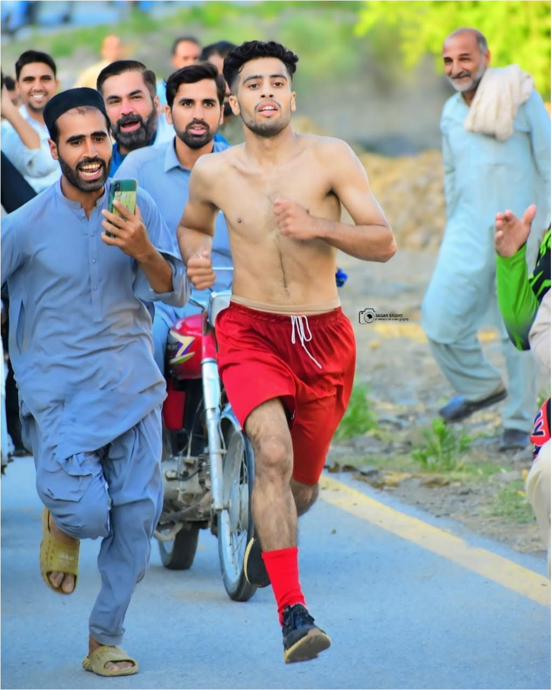
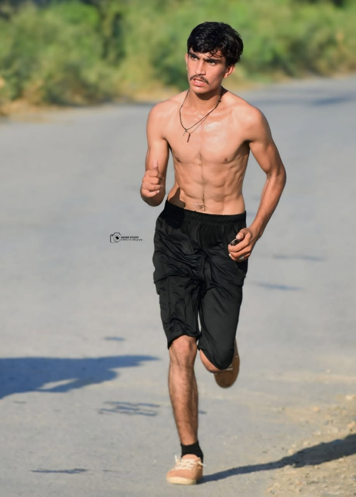
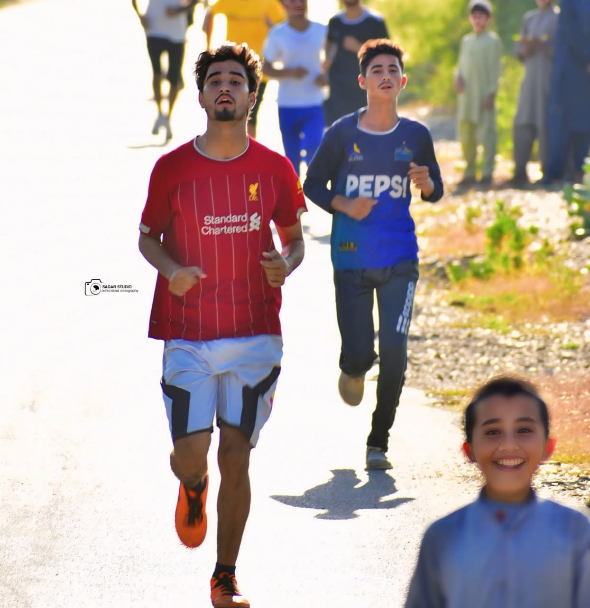

OFFICIAL RACE WEBSITE SEASON 03
One community.
One starting line.
Khawrai Marathon Race Season Three has been postponed due to unavoidable circumstances. The race will be rescheduled at the same venue, and the new date will be announced officially. Online registration remains open until the rescheduled date, and existing registrations remain valid.
RACE STATUSPostponed · New date to be announced

THE RACE CONTINUES
KRun with purpose.Celebrate every runner. Honour every finish.
KHAWRAI MARATHON · SEASON THREE
03 SEASONS OF COMMUNITYKHAWRAI · KHYBER PAKHTUNKHWAEST. THROUGH COMMUNITY SPORT
RACE INFORMATION
The race, at a glance.
The race has been postponed and will be rescheduled at the same venue. The new date and timings will be announced through an official notice.
THE PODIUMRun for the moment.
Run for the moment.
Earn the honour.
Recognising the top three finishers with prize money and a trophy. Official places are published on the live results page.
View live standingsFIRST PLACE
Champion
Rs. 15,000
Winning Trophy
Gold podiumSECOND PLACE
Runner-up
Rs. 10,000
Trophy
Silver podiumTHIRD PLACE
Third place
Rs. 5,000
Trophy
Bronze podium

THREE
MORE THAN A RACEA local tradition.
Discover the story of KMR-S3
A local tradition.
A shared future.
Khawrai Marathon Race grows from the energy of its runners and the support of the community. Season Three carries that spirit forward with a wider invitation, transparent public updates and an official results experience.
01
Sport for everyoneCelebrate commitment, training and participation.
02
Transparent updatesUse official pages for runner information and results.
03
Community prideBring people together through a shared sporting event.
FOLLOW THE JOURNEYEvery runner has a story.
Every runner has a story.
Follow race day with us.
Read the official notice, review the event guide and follow official announcements for the new race date.